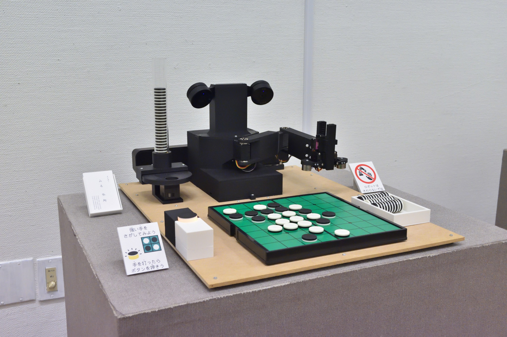
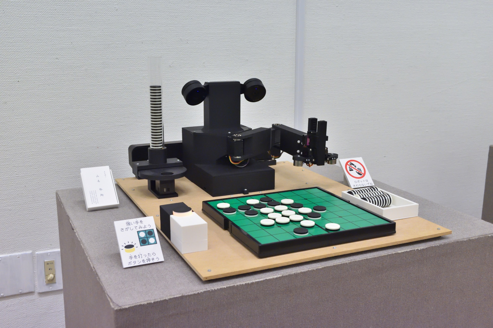

第７回つくばメディアアートフェスティバル
リバーシロボット "Minoth" "Isevot" (2025)
新作のリバーシ教授ロボット"Minoth"と、2022年に制作したリバーシロボット"Isevot"を展示しました。
作品キャプション
世界チャンピオンにリバーシAIが勝利してから四半世紀。リバーシAIは強さという面ではほぼ完璧になりました。しかし、AIができることはただ強い手を見つけることに留まっています。強いAIがロボットの体を持って、リバーシの勝ち方を教えてくれる未来があったらどうでしょう？そんな未来を体験していただきます。
 
詳細
「つくばメディアアートフェスティバル」は、「科学のまちつくば」の特色を生かした、つくばならではの文化の発信を目指して 2014 年度にスタートし、今回で 7 回目の開催となります。メディアアートの分野で世界でもトップクラスの実績を誇る筑波大学の「工学・芸術連携リサーチグループ」の協力のもと、筑波大学が輩出する国際的アーティストや学内公募により選ばれた学生たちによる、分野を超えテクノロジーと芸術が融合した作品の数々を展示します。最先端の研究の成果や新しい発想の数々を、見て、体験して、学べる。科学×アートの魅力を感じてみませんか。
◆開催概要
公式ページ: つくばメディアアートフェスティバル 2025
会期: 2025 年 8 月 1 日(金)〜8 月 11 日(月・祝) 休館日:8 月 4 日(月)
会場: 茨城県つくば美術館 （茨城県つくば市吾妻 2-8 TEL:029-856-3711）https://maps.app.goo.gl/FcX9PRP3SodK9ASp8
開館時間: 9:30〜17:00 （最終日は 13:00 閉館、入場は閉館の 30 分前まで）
入場無料